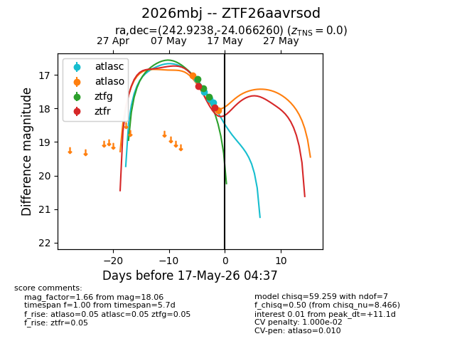
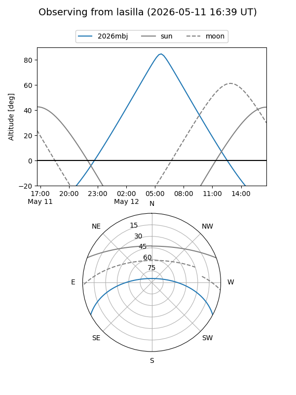
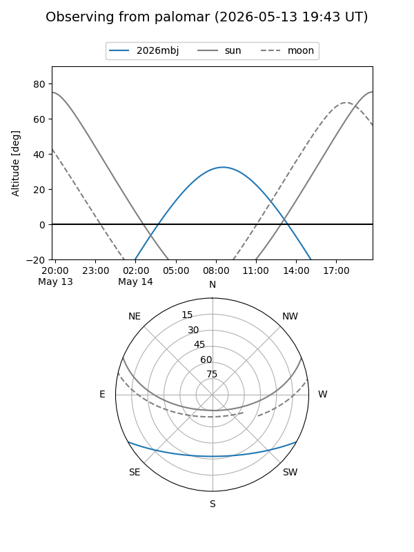
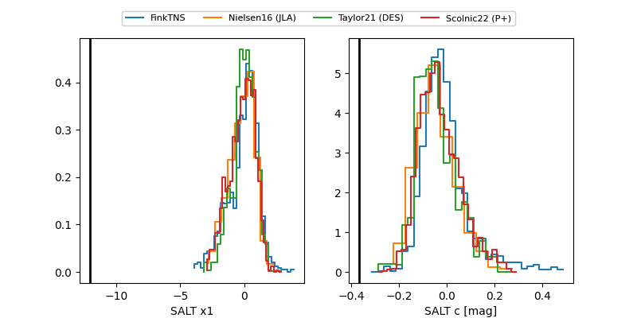

2026mbj
Target 2026mbj at 2026-05-17 04:39
Aliases and brokers:
FINK: link
Lasair: link
ALeRCE: link
TNS: link
YSE: link
alt names
ZTF26aavrsod (ztf,fink_ztf)
2026mbj (tns,yse)
Coordinates:
equatorial (ra, dec) = 242.9238,-24.06626
equatorial (HMS+DMS) = 16:11:41.71,-24:03:58.54
galactic (l, b) = (350.9405,+19.61507)
Flags:
likely cv
Photometry:
last atlasc=17.82, atlaso=18.06, ztfg=17.66, ztfr=17.97
4 atlasc, 2 atlaso, 3 ztfg, 2 ztfr detections
Lightcurve

Visibility


Additional plots
